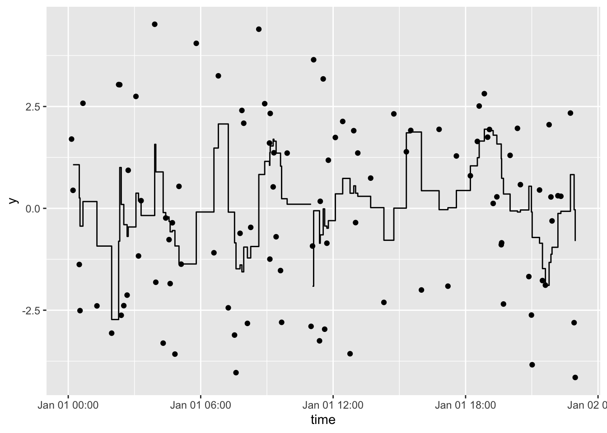

tbrf is retired. I will maintain the package to ensure it remains on CRAN but do not expect additional functionality or improvements. I highly recommend runner for the same functionality but faster!
The goal of tbrf is to provide time-window based rolling statistical functions. The package differs from other rolling statistic packages because the intended use is for irregular measured data. Although tbrf can be used to apply statistical functions to regularly sampled data, zoo, RcppRoll, and other packages provide fast, efficient, and rich implementations of rolling/windowed functions.
An appropriate example case is water quality data that is measured at irregular time intervals. Regulatory compliance is often based on a statistical average measure or exceedance probability applied to all samples collected in the previous 7-years. tbrf can be used to display regulatory status at any sample point.
tbrf identifies the previous n measurements within the specified time window, applies the function, and outputs a variable with the result of the rolling statistical measure.
Installation
tbrf is available on CRAN:
The development version is maintained on github and can be installed as:
Available Functions
tbr_binom: Rolling binomial probability with confidence intervals.tbr_gmean: Rolling geometric mean with confidence intervals.tbr_mean: Rolling mean with confidence intervals.tbr_median: Rolling median with confidence intervals.tbr_misc: Accepts user specified function.tbr_sd: Rolling standard deviation.tbr_sum: Rolling sum.
Example
Plot a rolling 1-hour mean:
library(tbrf)
library(dplyr)
library(ggplot2)
library(ggalt)
y = 3 * sin(2 * seq(from = 0, to = 4*pi, length.out = 100)) + rnorm(100)
time = sample(seq(as.POSIXct(strptime("2017-01-01 00:01:00", "%Y-%m-%d %H:%M:%S")),
as.POSIXct(strptime("2017-01-01 23:00:00", "%Y-%m-%d %H:%M:%S")),
by = "min"), 100)
df <- tibble(y, time)
df %>%
tbr_mean(y, time, "hours", n = 1) %>%
ggplot() +
geom_point(aes(time, y)) +
geom_step(aes(time, mean))
Plot a rolling 3-hour mean:
df %>%
tbr_mean(y, time, "hours", n = 3) %>%
ggplot() +
geom_point(aes(time, y)) +
geom_step(aes(time, mean))
Contributing
Please note that this project is released with a Contributor Code of Conduct. By participating in this project you agree to abide by its terms.
License
tbrf code is released under GPL-3 | LICENSE.md
binom_ci() is an implementation of code licensed under GPL (>=2) by Frank Harrell’s Hmisc package.
If you can cite the use of this software, please use citation("tbrf") 
Test Results
library(tbrf)
date()
## [1] "Tue Apr 1 14:02:26 2025"
devtools::test()
## ✔ | F W S OK | Context
##
## ⠏ | 0 | expectedClass
## ⠏ | 0 | core functions work in piped workflow
## ⠸ | 1 3 | core functions work in piped workflow
## ✔ | 3 6 | core functions work in piped workflow
## ────────────────────────────────────────────────────────────────────────────────
## Warning ('test-expectedClass.R:10:3'): tbr_binom returns tbl_df in tidy chain
## Use of .data in tidyselect expressions was deprecated in tidyselect 1.2.0.
## ℹ Please use `"temp"` instead of `.data$temp`
## Backtrace:
## ▆
## 1. ├─testthat::expect_s3_class(...) at test-expectedClass.R:10:3
## 2. │ └─testthat::quasi_label(enquo(object), arg = "object")
## 3. │ └─rlang::eval_bare(expr, quo_get_env(quo))
## 4. ├─df %>% ...
## 5. ├─tbrf::tbr_binom(...)
## 6. │ └─... %>% tidyr::unnest(.data$temp) at tbrf/R/tbr_binom.R:38:3
## 7. ├─tidyr::unnest(., .data$temp)
## 8. └─tidyr:::unnest.data.frame(., .data$temp)
## 9. └─tidyselect::eval_select(expr = enquo(cols), data = data, allow_rename = FALSE)
## 10. └─tidyselect:::eval_select_impl(...)
## 11. ├─tidyselect:::with_subscript_errors(...)
## 12. │ └─base::withCallingHandlers(...)
## 13. └─tidyselect:::vars_select_eval(...)
## 14. └─tidyselect:::walk_data_tree(expr, data_mask, context_mask)
## 15. └─tidyselect:::expr_kind(expr, context_mask, error_call)
## 16. └─tidyselect:::call_kind(expr, context_mask, error_call)
##
## Warning ('test-expectedClass.R:44:3'): tbr_sd returns tbl_df in tidy chain
## Use of .data in tidyselect expressions was deprecated in tidyselect 1.2.0.
## ℹ Please use `"sd"` instead of `.data$sd`
## Backtrace:
## ▆
## 1. ├─testthat::expect_s3_class(...) at test-expectedClass.R:44:3
## 2. │ └─testthat::quasi_label(enquo(object), arg = "object")
## 3. │ └─rlang::eval_bare(expr, quo_get_env(quo))
## 4. ├─df %>% tbr_sd(x = value, tcolumn = date, unit = "years", n = 5)
## 5. ├─tbrf::tbr_sd(., x = value, tcolumn = date, unit = "years", n = 5)
## 6. │ └─... %>% tidyr::unnest(.data$sd) at tbrf/R/tbr_sd.R:21:3
## 7. ├─tidyr::unnest(., .data$sd)
## 8. └─tidyr:::unnest.data.frame(., .data$sd)
## 9. └─tidyselect::eval_select(expr = enquo(cols), data = data, allow_rename = FALSE)
## 10. └─tidyselect:::eval_select_impl(...)
## 11. ├─tidyselect:::with_subscript_errors(...)
## 12. │ └─base::withCallingHandlers(...)
## 13. └─tidyselect:::vars_select_eval(...)
## 14. └─tidyselect:::walk_data_tree(expr, data_mask, context_mask)
## 15. └─tidyselect:::expr_kind(expr, context_mask, error_call)
## 16. └─tidyselect:::call_kind(expr, context_mask, error_call)
##
## Warning ('test-expectedClass.R:53:3'): tbr_sum returns tbl_df in tidy chain
## Use of .data in tidyselect expressions was deprecated in tidyselect 1.2.0.
## ℹ Please use `"sum"` instead of `.data$sum`
## Backtrace:
## ▆
## 1. ├─testthat::expect_s3_class(...) at test-expectedClass.R:53:3
## 2. │ └─testthat::quasi_label(enquo(object), arg = "object")
## 3. │ └─rlang::eval_bare(expr, quo_get_env(quo))
## 4. ├─df %>% ...
## 5. ├─tbrf::tbr_sum(., x = value, tcolumn = date, unit = "years", n = 5)
## 6. │ └─... %>% tidyr::unnest(.data$sum) at tbrf/R/tbr_sum.R:25:3
## 7. ├─tidyr::unnest(., .data$sum)
## 8. └─tidyr:::unnest.data.frame(., .data$sum)
## 9. └─tidyselect::eval_select(expr = enquo(cols), data = data, allow_rename = FALSE)
## 10. └─tidyselect:::eval_select_impl(...)
## 11. ├─tidyselect:::with_subscript_errors(...)
## 12. │ └─base::withCallingHandlers(...)
## 13. └─tidyselect:::vars_select_eval(...)
## 14. └─tidyselect:::walk_data_tree(expr, data_mask, context_mask)
## 15. └─tidyselect:::expr_kind(expr, context_mask, error_call)
## 16. └─tidyselect:::call_kind(expr, context_mask, error_call)
## ────────────────────────────────────────────────────────────────────────────────
##
## ⠏ | 0 | expectedMessages
## ⠏ | 0 | core functions return expected errors and messages
## ⠹ | 3 | core functions return expected errors and messages
## ⠴ | 6 | core functions return expected errors and messages
## ✔ | 7 | core functions return expected errors and messages
##
## ⠏ | 0 | expectedValues
## ⠏ | 0 | core functions return expected structures and values
## ⠹ | 3 | core functions return expected structures and values
## ⠼ | 5 | core functions return expected structures and values
## ⠴ | 6 | core functions return expected structures and values
## ✔ | 6 | core functions return expected structures and values
##
## ⠏ | 0 | internalStatsFunctions
## ⠏ | 0 | internal statistical functions return expected values
## ⠼ | 5 | internal statistical functions return expected values
## ✔ | 17 | internal statistical functions return expected values
##
## ══ Results ═════════════════════════════════════════════════════════════════════
## Duration: 1.5 s
##
## [ FAIL 0 | WARN 3 | SKIP 0 | PASS 36 ]